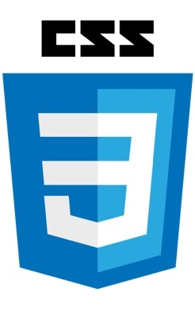

HTML, CSS y JavaScript:
Son los tres pilares fundamentales del desarrollo web que trabajan juntos para crear páginas web dinámicas e interactivas.
HTML se encarga de la estructura y el contenido, CSS del diseño y la presentación,
y JavaScript de la interactividad y la funcionalidad.
Definiciones
HTML (HyperText Markup Language):
Es el lenguaje de marcado que define la estructura y el contenido de una página web. Utiliza etiquetas para delimitar diferentes elementos, como párrafos, encabezados, imágenes, enlaces, etc.

CSS (Cascading Style Sheets):
Es un lenguaje de estilos que se utiliza para controlar la presentación de una página web. Permite definir aspectos como los colores, fuentes, tamaños, márgenes, etc. de los elementos HTML.

JavaScript (Program. Language):
Es un lenguaje de programación que permite agregar funcionalidad interactiva a una página web. Permite manipular elementos HTML, responder a eventos del usuario, realizar cálculos, etc.

Analogía de la web y una casa:
HTML
Estructura de la casa.
Es como los cimientos, las paredes, techos y distribución de las habitaciones.
HTML define la estructura básica de una página web: qué elementos hay (título, párrafos, botones, imágenes, etc.), pero sin preocuparse por cómo se ven.
CSS
Decoración y estilo de la casa.
Es la pintura de las paredes, el tipo de piso, los muebles, las cortinas, el diseño de la cocina.
CSS se encarga de cómo se ve la página: colores, fuentes, márgenes, alineaciones, estilos, responsivos... lo visual.
JavaScript
Los sistemas eléctricos y electrónicos de la casa.
Es como los interruptores que encienden luces, las puertas automáticas, el termostato inteligente.
JavaScript añade funcionalidad e interactividad haciendo que pasen cosas como respuesta a un evento.

Resumen
"Los tres lenguajes son esenciales para el desarrollo web, y cada uno juega un papel crucial en la creación de páginas web modernas y funcionales."